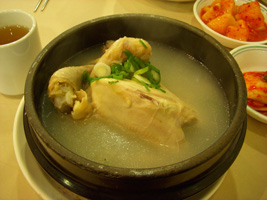

Daily Special
Cream of Womprat Soup - 3c
Small morsels of Wamprat fried and combined into a cream base soup. Great for a space traveler on the go.
Open all day. Every day. On Tatooine.
For a good time call: 867-5309
Chalmun@cantina.tat


Small morsels of Wamprat fried and combined into a cream base soup. Great for a space traveler on the go.
5 credit doubles during double noon every day!